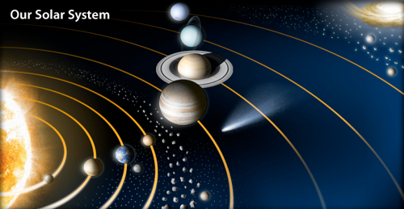
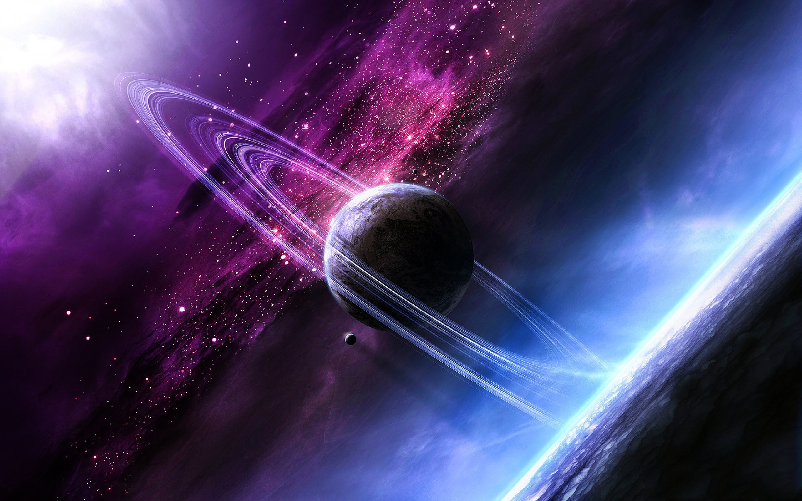

Science Concepts
This web page will explain science concepts
| Table of contents |
|---|
| The Big Bang |
| After The Big Bang |
| How did the universe look, after the Big Bang? |
| The Planets: How they were created |
| Earth created: The first life |
The Solar system

Our solar system consists of eight planets that revolve
around the Sun,
which is central to our solar system. These planets have been classified
into two categories that are "inner planets"
and "outer planets".
The Big Bang: How the Universe was created
Around 13.8 billion years ago, all the matter in the Universe emerged from a single
, minute point, or singularity, in a violent burst. This expanded at an astonishingly
high rate and temperature, doubling in size every 10-34 seconds, creating space as it
rapidly inflated. Within a tiny fraction of a second gravity and all the other forces
were formed. Energy changed into particles of matter and
antimatter, which largely destroyed each other.
During the Big Bang, all of the space,time, matter, and energy
in the Universe was created. This giant explosion hurled matter
in all directions and caused space itself to expand. As the
Universe cooled, the material in it combined to form galaxies, stars, and planets.

What happened after the Big Bang?
After the Big Bang, the universe was like a hot soup of particlesOver billions of years, gravity caused gas and dust to form galaxies,
stars , planets, and more. The matter that spread out from the Big Bang
developed into everything in the universe, including us.
Astronomers have figured out that the universe
is about 13 billion years old.
How did the universe look, after the Big Bang?
The Era of Recombination continued until around a few hundredmillion years or so after the Big Bang, the universe
was a very dark place. There were no stars, and there were no galaxies.
The planets: How they were created
The various planets are thought to have formed from the solar nebula,the disc-shaped cloud of gas and dust left over from the Sun's formation.
The currently accepted method by which the planets formed is accretion,
in which the planets began as dust grains in orbit around the central protostar.
The Earth created: The first life
The age of the Earth is about 4.54 billion years; the earliest undisputed evidence of life on Earth dates from at least 3.5 billion years ago.There is evidence that suggests life began as early as 4.5 billion years ago.
The first organisms Bacteria have been the very first organisms to live on Earth. They made their appearance 3 billion years ago in the waters of the first oceans.
At first, there were only anaerobic heterotrophic bacteria.
Facts on our Planets |
Facts on Space |
About our Sun |
More about our Solarsystem |

© 2021-2021